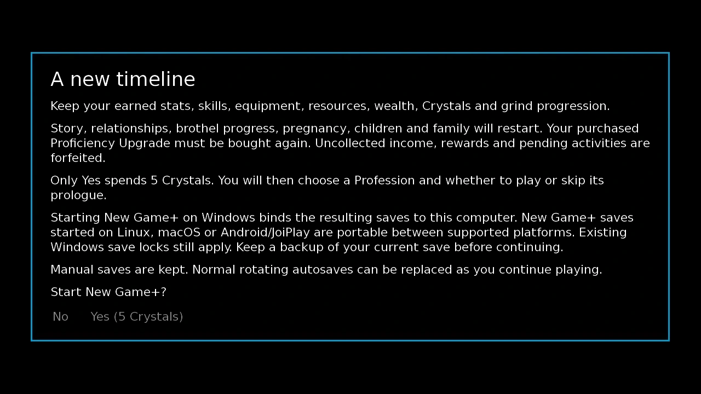
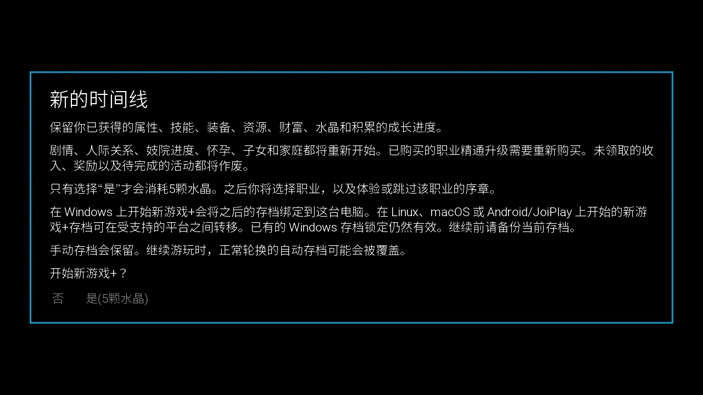

Select a screenshot to enlarge it. Screens show example inventories and progress.
Continue this timeline or start a new one
New Game+ is optional and becomes available from day 20 of your current timeline. It costs 5 Crystals and starts a new story timeline while retaining your earned character power and many long-term collections. Finishing the main story is not a prerequisite. The menu currently calls it New Game+ (Beta).
Completing the main story also allows continued play in the same timeline. When the HUD reads World Saved, the Doomsday countdown is no longer an active deadline, and timeline extensions are no longer offered. You can keep working on personal content, collections, businesses and challenge goals without choosing New Game+. This guide explains the mechanical choices without describing ending scenes.
Choose continued play when you want to preserve relationships and businesses. Choose New Game+ when you want to replay the story or change profession while bringing your earned power with you. A new timeline also returns to a 60-day Doomsday countdown.
Find Sylwithe and check the requirements
Travel through Medieval → Village Outskirts → Whispering Woods → The Darkened Path → Sylwithe’s Hollow. Entering The Darkened Path and then the Hollow takes 5 minutes per leg. Sylwithe is available around the clock. The Hollow has its own content-access requirement; opening New Game+ does not bypass that entrance requirement.
At the Hollow, select New Game+ (Beta). You need to be on day 20 or later in this timeline and have at least 5 Crystals. A long lifetime record from an older timeline does not satisfy the new timeline’s day-20 requirement. An unavailable action should be checked against the current action tooltip and your access to the venue.
For the venue’s other upgrades and route details, see Sylwithe’s Hollow.
Collect what you want before confirming
- Make a separate manual save of the current timeline. Keep it if you may want to return to the existing story, family or business state.
- Collect investment returns, business profits and completed rewards that you want to retain as money or items. Uncollected income is not cashed out for you.
- Finish or abandon pending activities deliberately. Active tower-defense rewards, mining work and other pending commitments do not become free carryover rewards.
- Read the confirmation screen, including the save-portability notice. Only the Yes choice pays the 5-Crystal fee.
Before New Game+, process any pending batch in the Reclamation Bay or use Undo Queue to recover its items. Pending queues and results are cleared by the transition; credited resource balances, Core Purity and permanent research are retained.
The confirmation preview spends nothing. Manual saves are kept, while normal rotating autosaves may eventually overwrite old autosave slots. Do not rely on rollback to undo a committed new timeline.

What carries over
| Area | Carryover |
|---|---|
| Your character | Earned stats, learned skills, permanent maximum-resource bonuses, installed body-modification levels and personal equipment. |
| Wallet and supplies | Wealth, Crystals, Gems, materials, fabrics, ingredients, ordinary consumables and mining inventory. The 5-Crystal entry fee is deducted. |
| Collected equipment and upgrades | Soul Stones and their upgrade levels, forged armor, fishing rods, personal outfit levels and retained unique equipment. Maid and worker equipment returns to inventory when its wearer resets. |
| Long-term side activities | Caterpillar collections, populations, research and habitats; retained fishing lessons, bait and boat upgrades; Kupie balances and development; tower-defense upgrades, research, army experience and recorded battle progress. |
| Records and earned trophies | Recorded accomplishments and earned Sanctum trophy tiers survive. A restarted activity can show lower current progress while its previously earned trophy remains. |
| Selected public projects and travel passes | The completed statue, pavilion, uptown pool and boardwalk, plus purchased travel passes. Normal story access and introductions still restart. |
Caterpillar ages and respawn dates are adjusted to the new day-1 calendar rather than leaving their dates stranded in the old timeline. Kupie retains its development, but the transition does not award a stockpile of uncollected elapsed production. Story-specific delivery items can be removed even though ordinary supplies and retained unique items remain.
What starts again
| Area | Reset or exception |
|---|---|
| Story and relationships | Main-story progress, personal plots, Heart-to-Hearts, relationship points/stages and associated access start again. |
| Business operations | Brothel ownership and operating mode, workers and maids, room development, Reputation, clothes/training arrangements, captured monsters and pending reports restart. Retained equipment does not rehire its previous owner. |
| Investment portfolio | All investment levels and company ownership restart. Pending investment returns are lost; money already collected remains in your wallet. |
| Family and ongoing commitments | Pregnancy, children, family progress, pending jobs, outings and activities restart or are forfeited. |
| Dungeon run and temporary combat effects | Active runs, ordinary/Infinity floor progress, temporary buffs, current forcefield and combat status effects reset. Retained combat equipment and collected Soul Stones remain. |
| Guild and recruitment access | Faction standing and quest position restart. Tower-defense heroes must be unlocked/recruited again where required, while their retained upgrades wait for them. |
| Proficiency Upgrade | The purchased Proficiency Upgrade must be bought again for 10 Crystals. The newly selected profession takes its place until then. |
Retained power can make repeated activities easier, but it does not automatically complete their story introductions. A stronger retained fishing rod or crafted item does not require you to throw it away to rebuild a personal route. Where a retained lesson, item or one of the listed public projects must be acquired again for story progression, its acquisition price can be waived; the activity’s normal time and running costs still apply. This does not waive the Proficiency Upgrade.
Profession choice and arrival
After confirmation, choose one of the eleven starting professions, then decide whether to play its prologue or skip it. Your retained stats, skills and equipment stay with you. Selecting another profession does not grant a second free set of its starting skills or equipment. Retained proficiency equipment keeps its upgrade level and changes to the selected profession’s corresponding equipment name.
The new timeline arrives in the Present, Uptown, on day 1 at 08:00, with a 60-day Doomsday timer. Health, Energy, Calm and Satiation refill to their current maxima. Temporary potion effects, current forcefield and combat statuses clear. Initial era-travel onboarding is already completed, but personal and story access must be developed again.
If you previously bought Proficiency Upgrade, your new profession applies until you purchase that upgrade again for 10 Crystals. Already retained proficiency-equipment levels do not disappear. The profession choice and the purchased upgrade are separate decisions.
Repeat the content; check whether the reward is repeatable
New Game+ is not a way to farm the same permanent story reward indefinitely. The game remembers claimed reward components separately from the restarted story. Previously received permanent bonuses, tutorial rewards, guild payouts, relationship Crystal awards and other tracked one-time rewards are protected against duplication. Your existing bonus remains even when its repeated scene no longer pays it again.
Tutorial objectives can be completed again in the new timeline, but already claimed permanent tutorial rewards do not become fresh rewards. Likewise, rebuilding a previously rewarded relationship does not create another Crystal for the same person. Ordinary genuinely repeatable activities still follow their normal rules.
Older saves with incomplete reward history can show an additional warning before starting. Some permanent reward opportunities may be conservatively withheld to prevent duplicates; the earned bonuses already present on your character are retained. Read that save’s own warning instead of assuming that every replay will repay every reward.
Save portability and transition recovery
The confirmation screen states that Windows New Game+ saves bind to the computer on which the timeline was created. New Game+ saves made on Linux, macOS, Android or JoiPlay remain portable between supported platforms, while an existing Windows lock still applies. Back up the current timeline before starting if moving saves between devices matters to you.
If the transition fails and the recovery screen appears, use its offered choices: retry the transition, or return to the previous timeline and refund the 5-Crystal fee. A failed attempt does not justify paying a second fee outside that recovery flow. Once a new timeline has successfully started, return to your separate older manual save if you want the former timeline.
Related guides: Sylwithe’s Hollow, Soul Stones, Body Modifications, Investments and Caterpillars.
Related progression guides: Crystals and Doomsday · Objectives, Tutorials and Trophy Goals
继续当前时间线，或开启新周目
新游戏+是可选功能，从当前时间线第20天起即可开启。花费5颗水晶，便能重新开始剧情时间线，同时保留已培养的角色实力和多项长期收藏。无需先完成主线。当前菜单名称为新游戏+（测试版）。
完成主线后，也可以继续留在原时间线游玩。当时间栏显示世界已获救时，末日倒计时便不再构成期限，「延长时间线」也不再提供。你可以继续推进个人内容、收集、经营和挑战目标，无需开启新游戏+。本页只说明机制，不描述结局场景。
想保留现有关系与产业，可以继续当前时间线；想重温剧情或更换职业，同时带上已经培养的实力，可以选择新游戏+。新时间线会重新获得60天的末日倒计时。
找到Sylwithe并确认开启条件
路线为中世纪 → 村庄郊外 → 低语森林 → 昏暗小径 → Sylwithe的幽谷。从森林进入昏暗小径，再进入幽谷，每段各耗时5分钟。Sylwithe全天都在。幽谷本身有内容访问条件；新游戏+不会绕过入口限制。
抵达后选择新游戏+（测试版）。需要当前时间线已到第20天，并持有至少5颗水晶。上一条时间线累积的长期记录，不能代替新时间线的第20天要求。动作不可用时，先查看动作提示与幽谷的访问条件。
幽谷的其他升级和路线说明见Sylwithe的幽谷。
确认前先收取想保留的报酬
- 另存一个手动存档。若以后想回到现有剧情、家庭或经营状态，请保留这份存档。
- 先领取想保留的投资收益、营业利润和已完成奖励，让它们实际进入钱包或库存。未领取的收益不会自动兑现。
- 确认正在进行的活动是否要先完成。尚未结算的塔防奖励、采矿工作和其他待办事项，不会免费转为新周目奖励。
- 阅读确认画面，包括存档跨平台说明。只有选择确认开启，才会支付5颗水晶。
开启新游戏+前，请先处理再生工坊中尚未完成的批次，或使用撤回队列取回物品。转换周目会清除待处理队列与待领结果；已经入账的资源、核心纯度和永久研究会保留。
查看说明本身不扣水晶。手动存档会保留，但正常轮换的自动存档以后仍可能覆盖旧自动档。不要把回滚当作撤销已完成周目转换的办法。

哪些进度会保留
| 项目 | 保留内容 |
|---|---|
| 玩家自身 | 已获得的属性、已学技能、永久资源上限加成、已安装身体改造的等级，以及个人装备。 |
| 财富与物资 | 财富、水晶、宝石、材料、布料、食材、普通消耗品与采矿物资；开启周目所用的5颗水晶会扣除。 |
| 已收集装备与强化 | 灵魂石及其强化等级、锻造护甲、鱼竿、个人服装等级和可保留的独特装备。女仆与员工重置后，原本穿戴的道具会退回库存。 |
| 长期支线积累 | 毛毛虫收藏、种群、研究与栖地；可保留的钓鱼课程、鱼饵和船只升级；Kupie的货币与养成进度；塔防强化、研究、部队经验及已记录的战斗进度。 |
| 记录与已获奖杯 | 已记录的成就与圣所已获得的奖杯等级会保留。某项活动重置后，当前进度可能降低，但已经拿到的奖杯不会因此消失。 |
| 部分公共工程与交通通票 | 已完成的雕像、凉亭、上城区泳池和木板路，以及已购买的交通通票；常规剧情通行条件与人物引见仍要重新推进。 |
毛毛虫的年龄与再生日期会配合新周目的第1天调整，不会仍然停留在旧时间线的日期上。Kupie养成会保留，但转换周目时不会补发尚未结算的离线产出。专供剧情交付的物品可能会移除；普通物资和可保留的独特道具则会留下。
哪些内容会重新开始
| 项目 | 重置内容或例外 |
|---|---|
| 剧情与关系 | 主线、个人剧情、谈心、关系点数与阶段，以及相关通行条件重新开始。 |
| 营业与经营 | 青楼经营权与经营模式、员工和女仆、房间建设、声誉、员工服装与培训安排、已捕获怪物及待领报告收益均重新开始。保留装备不会自动招回原来的使用者。 |
| 投资组合 | 全部投资等级与公司所有权重置。尚未收取的投资收益会失去，已经转入钱包的财富保留。 |
| 家庭与未完成事务 | 怀孕、子女与家庭进度重新开始；未完成的工作、出行及活动可能被取消，尚未领取的报酬不会自动结清。 |
| 地下城进度与临时效果 | 当前探索、普通地下城与无限地下城的楼层进度、临时增益、当前力场及战斗状态重置；已经保留的战斗装备和灵魂石仍在。 |
| 公会与招募条件 | 派系声望和任务进度重新开始。塔防英雄如有解锁或招募条件，需要再次满足；其已保留的强化会等待重新招募后使用。 |
| 熟练度升级 | 已购买的「熟练度升级」需要重新花10颗水晶购买。在此之前，使用新周目选定的职业。 |
带入的实力能让重复活动更轻松，但不会自动完成剧情中的初次引见。重走个人路线时，不需要为了重新取得旧物而丢弃已经保留的高级鱼竿或成品。若剧情需要再次取得已经保留的课程、道具或上表所列公共工程，相应的购置费用可以免除；活动本身的常规耗时和运行消耗仍然存在。「熟练度升级」不享受这项免购置费用待遇。
职业选择与新周目起点
确认后，从十一种初始职业中选择一种，再决定游玩该职业的序章或直接跳过。已保留的属性、技能与装备会跟随角色。改选职业不会额外赠送一套该职业的初始技能或装备。已经强化的职业装备保留等级，并改用新职业对应的装备名称。
新时间线从现代上城区，第1天08:00开始，末日倒计时为60天。生命、精力、镇定和饱腹感补满至当前上限；药水临时效果、当前力场与战斗状态会清除。初始时代旅行教学已视为完成，但个人路线与剧情通行条件仍需重新推进。
如果此前购买过熟练度升级，新周目会先使用这次选定的职业；重新支付10颗水晶购买后，才恢复该升级。已保留的职业装备强化等级不会消失。选择初始职业与购买熟练度升级是两件事。
内容可以重玩，奖励要看领取记录
新游戏+不能用来无限重复领取同一项永久剧情奖励。剧情虽然重置，已领取的奖励会另行记录。此前拿过的永久加成、教程奖励、公会报酬、关系水晶奖励及其他已跟踪的一次性奖励，通常不会再次发放；原本已经获得的加成仍会保留。
新时间线可以重新完成教程目标，但已经领过的永久教程奖励不会因此刷新。同理，重新培养曾经领取过水晶奖励的关系，不会让同一人再给一颗水晶。真正可重复的日常活动仍按自身规则进行。
部分旧存档的奖励记录不完整，开启前可能会出现额外提示。为避免重复发放，某些永久奖励机会会按较保守的方式处理；角色身上已经获得的加成仍然保留。请以该存档显示的提示为准，不要预期每段重看剧情都能再次领到全部报酬。
存档跨平台与转换失败后的处理
确认画面会说明：在Windows上创建的新游戏+存档会绑定创建该时间线的电脑。在Linux、macOS、Android或JoiPlay上创建的新游戏+存档，可在受支持平台间迁移；已经存在的Windows绑定仍然有效。如果你需要跨设备转移存档，请先备份当前时间线。
若转换失败并出现恢复画面，可以按画面提供的选项重试，或返回原时间线并退回5颗水晶。不要为失败的转换在恢复流程之外另付一次费用。成功开启新时间线后，若想回到此前的世界状态，请读取另外保留的旧手动存档。
相关指南：Sylwithe的幽谷、灵魂石、身体改造、投资系统与毛毛虫。
相关成长指南：水晶与末日倒计时 · 任务、教程与奖杯目标
CC BY-SA 4.0. Game images © Chronoromancer Studio.